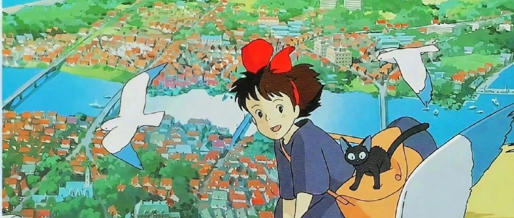

我真的有好好过自己的人生！
点击关注 秋秋在分享
一起实现财务自由退休
大家好，我是秋秋呀。
前两天和老王聊天把自己聊哭了，觉得想做的事变了，又怕自己做不好。(比如我想做个好妈妈，又觉得自己不细心)
翻看5年前写的一些小心愿:
1.做数码博主
有技术有干货，全网100万粉丝
2.fire靠利息生活
退休过候鸟生活
金钱准备300万，每月利息1万
3.身体健康
保持100斤 饮食➕运动
4.读很多书
情绪平和
5.有个自己的房子
四季如春自己装饰
算都完成。
博主我做的很开心，金钱也存下了，候鸟生活一直践行，保持读书，当时减肥直接瘦了10斤，房子没有选好地方但是准备了资金。
现在想做的事变了。
相比于自己玩，我更爱收拾干净整齐的家。
更喜欢阳光下晒太阳的猫猫狗狗，更爱小宝宝的笑声。
我好像变了，有了让我牵挂留恋的那些东西。
于是我整理下新的愿望:
1.做舒服自己
我想保持95斤
相对于美丽更想找对适合自己的风格 ，健康，干净整齐。
2. 读很多书
每周要看一本书
每月去书店，可以接触新信息。我发现读书可以保持情绪稳定。
3.旅行&旅居
陪宝宝成长，想带着宝宝一起看遍大好山河，四季舒适 候鸟生活。
4.最后，在喜欢的城市有套房子
希望在看过很多地方以后，在喜欢的城市有个带露台的大平层。
以前想有院子，住过一楼i人的我，发现只需要露台就够了。
房子能放下猫猫狗狗花草植物我们一家人👨👩👧👦
我的愿望从存够具体数字，有多少粉丝，怎么过fire旅居生活，变成了做温暖舒服的人。
我想先从温暖自己开始，从身体思想变得平静舒服灵动，再影响身边人和大家吧！
学习爱，感受爱，分享爱。
我也一直在成长和变化着。